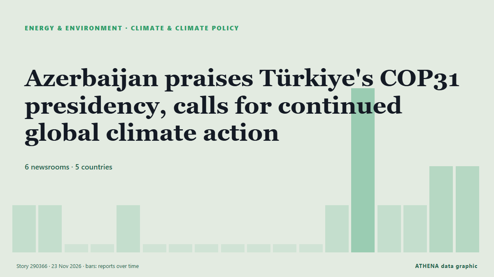

Climat et politique climatique
SponsoriséPrésenté par  Cybernetics and Artificial Intelligence Lab Welcome to the Cybernetics and Artificial Intelligence Laboratory, established at the Department of Business Administration of the National and Kapodistrian University of Athens. The lab is headed by Professor Dimitrios Thomakos. The lab aims to do research that can be published in top venues. Our research uses tools and methods of Artificial Intelligence, and lies in the following areas: - Forecasting - Decision making - Cyber security - Finance We are always looking forward to collaborating with exceptional students!
Cybernetics and Artificial Intelligence Lab Welcome to the Cybernetics and Artificial Intelligence Laboratory, established at the Department of Business Administration of the National and Kapodistrian University of Athens. The lab is headed by Professor Dimitrios Thomakos. The lab aims to do research that can be published in top venues. Our research uses tools and methods of Artificial Intelligence, and lies in the following areas: - Forecasting - Decision making - Cyber security - Finance We are always looking forward to collaborating with exceptional students!
| 10 nov. | 0 |
|---|---|
| 11 nov. | 3 |
| 12 nov. | 1 |
| 13 nov. | 0 |
| 14 nov. | 1 |
| 15 nov. | 0 |
| 16 nov. | 2 |
| 17 nov. | 0 |
| 18 nov. | 3 |
| 19 nov. | 4 |
| 20 nov. | 2 |
| 21 nov. | 1 |
| 22 nov. | 5 |
| 23 nov. | 0 |
Les titres sont affichés en anglais, tels que publiés.

Azerbaijan praises Türkiye's COP31 presidency, calls for continued global climate action
Azerbaijan has expressed appreciation to Türkiye for hosting the 31st Conference of the Parties (COP31) to the United Nations Framework Convention on Climate Change (UNFCCC), highlighting the… de AzerNews
Dutch climate minister calls COP31 outcome "disappointing" as it ends without deal
Dutch Climate Minister Stientje van Veldhoven on Sunday called the outcome of the UN climate summit in Antalya, Türkiye, “dissapointing” after participating countries failed to reach an agreement. de NL Times
Australia news LIVE: UN climate talks collapse, fail to reach agreement; Burke slams Hanson’s plan to cut humanitarian refugee intake
Follow along as we bring you the latest live news updates from Australia and around the world. de The Age
At SCO forum in New Delhi, Musadik Malik terms climate change a 'threat' to civilisation
Minister for Climate Change and Environmental Coordination Dr Musadik Malik addresses Shanghai Cooperation Organisation Civilisational Dialogue Forum in New Delhi, India, November 21, 2026.… de Geo News (English)
Pacific climate demands face resistance at COP31
COP31 negotiations have entered a critical second week after Australia’s Minister for Climate Change and Energy, Chris Bowen, presented the first draft of a presidency-led cover decision, setting out… de Post-Courier (PNG)
EU officials reject Cop31 deal as it 'doesn't speak to reality of the climate crisis' – video
The Cop31 climate talks fell into disarray as the EU, UK and allies in the developing world rejected what they called an unacceptable deal on the future of the climate. de Guardian Environment
COP31 climate talks on the brink as new draft deal faces scrutiny
New draft would acknowledge for the first time that global warming is on course to pass the 1.5C threshold. de Al Jazeera English
Fossil Fuels Missing In New COP31 Draft Deal, Tensions Remain Unresolved
Fossil fuels are a flashpoint at the climate talks and the summit comes against a difficult backdrop of soaring energy prices and geopolitical tensions stemming from the war in Iran. de NDTV World
COP31 climate deal in the balance after fractious talks
Ten years after the Paris Agreement took effect, its durability faces another test. de Khmer Times
Forum Chair backs Australia’s COP31 role as Albanese defends conference spending
Australian Prime Minister Anthony Albanese has defended the cost of hosting and participating in COP31, saying climate action is a matter of Australia's national interest, regional security and its… de Post-Courier (PNG)
Fight over fossil fuels leaves COP31 climate talks in deadlock
Countries from nearly 200 countries are in a deadlock to try and get a new global climate agreement. de BBC News
Countries race to secure COP31 deal after fossil fuel row
The COP31 climate talks have extended into Saturday as nations struggle to agree on a deal following the removal of fossil fuel references from draft texts, highlighting significant disagreements. de Arab News
UN launches Disaster Risk Financing Platform at COP31 to make humanitarian responses faster and more predictable
The initiative aims to secure access to more than US$3 billion in risk financing to protect 75 million people from climate shocks by 2030. de UNICEF
Meta to reevaluate net-zero timeline on the back of record emissions
Company reported a 45 percent increase in carbon footprint due to AI demand. de Data Center Dynamics
World Children’s Day: UNICEF Reaffirms Afghan Children’s Right to Education
UNICEF has called for greater investment in children’s education in Afghanistan, warning that millions remain excluded from learning amid growing humanitarian needs and restrictions on girls’… de Khaama Press
Clean energy choices shape environmental impacts beyond greenhouse gas emissions
The burning of fossil fuels such as coal, gas and oil is the primary driver of climate change, but clean energy strategies to achieve net-zero greenhouse gas emissions do not systematically alleviate… de Phys.org
Meta says 'reevaluating' 2030 net zero target amid AI buildout
Meta executives said rising complexity and the need to build AI infrastructure had made progress towards its net zero goal more challenging. de Free Malaysia Today
More climate money for Africa? Europe says use what's already pledged
African countries at the UN climate summit in Turkey are demanding more funding from developed nations to help them cope with climate change. de BBC News
Musadik Malik arrives in New Delhi to attend SCO dialogue forum
Minister for Climate Change and Environmental Coordination Dr Musadik Malik arrived in New Delhi on Friday to attend the SCO Civilisational Dialogue Forum. de Dawn